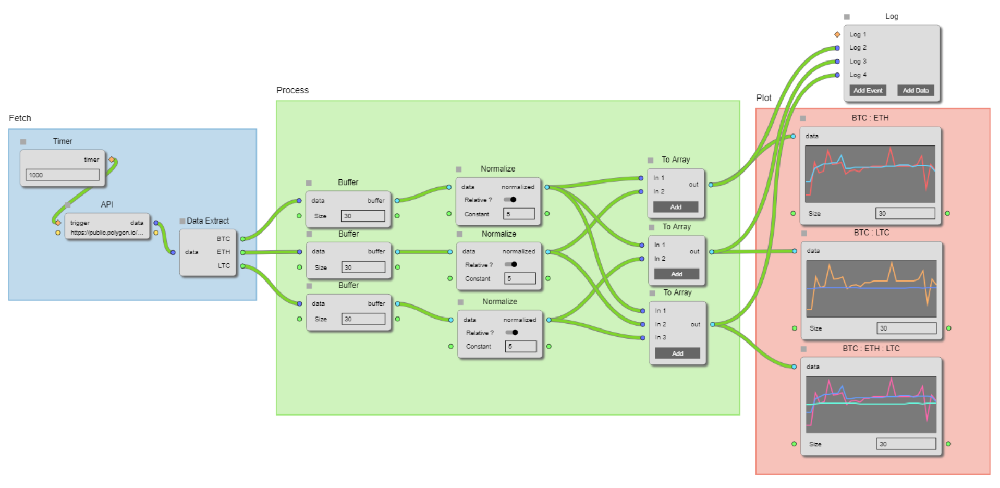

De-register a callback to an event
name of the event to de-register
a numbered id that was generated at the time of event registration
Register a callback to an event
name of the event to listen to
reference to a callback that will be triggered when this event happens
a numbered ID that can be used later to de-register this hook
Generated using TypeDoc
A Flow is a set of Nodes, Connectors and Groups, it can also contain SubFlowNodes thereby creating a tree of Flows. 